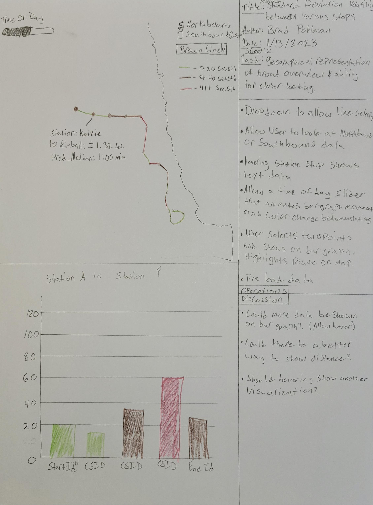
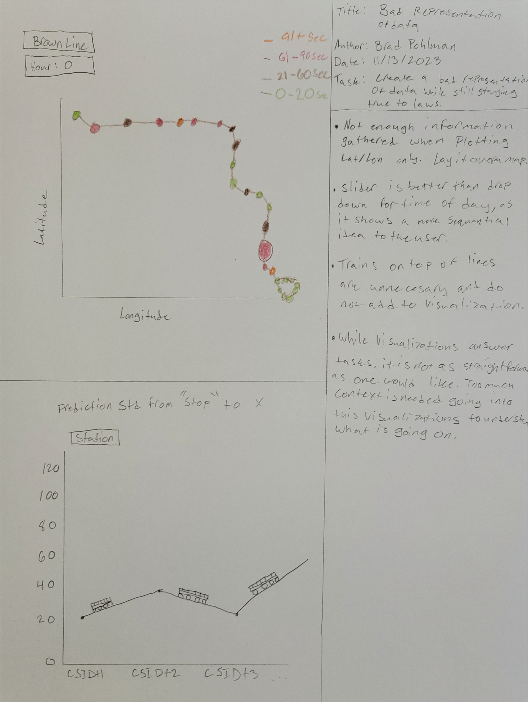
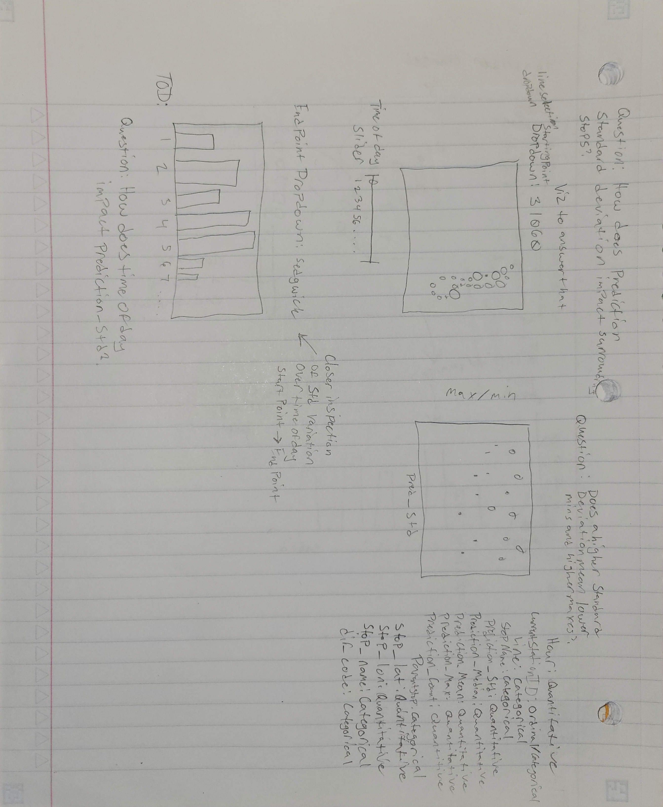

CSCI 627/490 Data Visualization
Project Design Page
Brad Pohlman
Z1923374
Design 1: Good

Design 2: Good

Design 3: Bad

Reasons this is bad:
- Does not play off the geography of chicago and only creates points with little context
- Grouping for colors is scattered and does not represent data well
- Line graph is not necessary when comparing station to station because it insinuates other stops with different points between these stations
- Adding trains on top of line graph is useless
- The visualizations are too cluttered and requires too much context to answer tasks
Prototype Update:

Observable notebook for code